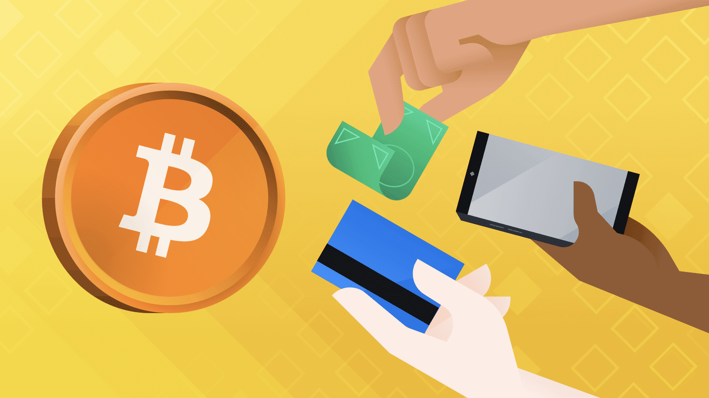

3 Ways You Can Sell Your Bitcoin Into Cash: A Quick Guide from Binance
Following our recently-updated guide on how to buy Bitcoin, we now provide you with various available options on how to convert BTC into fiat currency on Binance and our partner platforms
2022-07-26